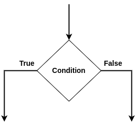
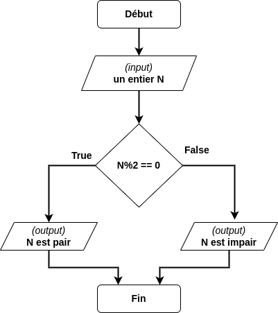
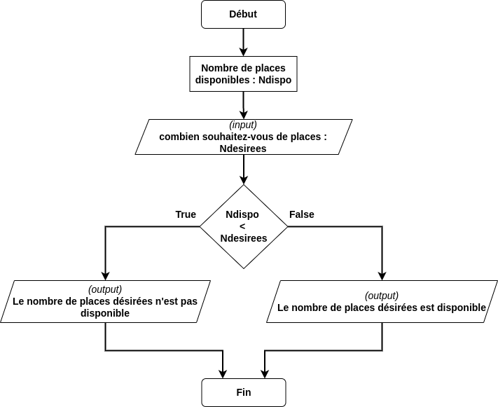
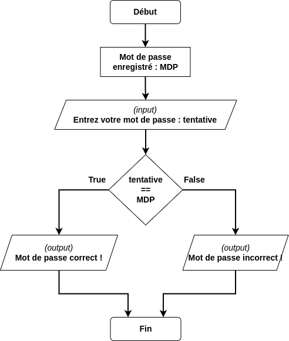

C1-ALGO-11 : Les tests conditionnels
Contents
C1-ALGO-11 : Les tests conditionnels#
Objectifs pédagogiques#
connaître les définitions des tests conditionnels
être capable de dessiner l’algorigramme correspondant
connaître la syntaxe Python pour
les tests simples
les tests complexes (imbriqués, plusieurs conditions)
appliquer sur des exemples
Introduction aux tests conditionnels en algorithmique#
Un test conditionnel est un choix dans un algorithme. Il est l’une des composantes principales de la définition d’un algorithme.
Définition d’un test conditionnel#
Une condition est une expression qui peut prendre l’une des deux valeurs booléennes True ou False.
Un test conditionnel (ou instruction conditionnelle) est une construction algorithmique qui effectue différentes actions, calculs ou opérations en fonction du résultat booléen de la condition.
Le symbole utilisé dans les algorigrammes est le suivant :

Exemples d’applications courantes des tests conditionnels dans la vie quotidienne et en informatique#
Test de parité : est-ce qu’un nombre est pair ou impair
Test de l’âge : a-t-on l’âge requis pour entrer au cinéma
Test du nombre de places disponibles : y a-t-il encore des places disponibles pour l’achat d’un billet de concert ?
Test du mot de passe : le mot de passe “1234” est-il le bon mot de passe ?
Concepts fondamentaux des tests conditionnels#
Un test conditionnel se construit toujours avec une condition au minimum.
La structure if#
La structure if (si en frnçais) est fondamentale en algorithmique. Elle permet d’aiguiller, de choisir un chemin dans un algorithme en fonction d’une condition vraie ou fausse.
En programmation, la structure if permet d’exécuter un bloc d’instructions si la condition est vraie.
if (condition est vraie) alors
exécuter un bloc
La structure if ... else#
Il est possible d’ajouter à la condition if la condition opposée else et d’exécuter un autre bloc d’instructions si la condition est fausse:
if (condition est vraie) alors
exécuter un bloc
else:
exécuter un autre bloc
Structures de contrôle conditionnelles avancées#
Tests imbriqués#
Lorsqu’une condition est vérifiée, alors il est possible de tester une autre condition dans le bloc d’instructions:
if (condition est vraie) alors
if (une autre condition) alors :
exécuter un bloc
else:
exécuter un autre bloc
else:
exécuter encore un autre bloc si la première condition est fausse
En Python : attention à l’indentation des instructions
Tests multiples if ... elif .... else#
Il est possible de tester plusieurs conditions dans une structure de contrôle et ainsi exécuter autant de blocs différents qu’il y a de conditions vraies :
if condition1 est vraie :
exécuter un bloc
elif condition2 est vraie :
exécuter un autre bloc
else : # (toutes les conditions sont fausses)
exécuter encore un autre bloc
Comparaison des valeurs dans la condition#
Pour qu’une condition soit vraie (ou True), alors il s’agit de comparer deux éléments.
Deux règles de base doivent être respectées impérativement. Les deux éléments à comparer doivent absolument :
être déclarée avant le test : soit comme entrée, soit comme une instruction
être du même type
Le type est une caractéristique d’une grandeur (généralement une variable) qui en décrit sa nature. Par exemple (non exhaustifs) :
un entier (par exemple
1,6000, etc..)une chaîne de caractères (par exemple
Caroline,année, …)
On ne peut pas comparer une châine de caractères avec un entier tout comme on ne compare pas des pommes avec des poires
Les 6 opérateurs de comparaison#
Pour comaprer deux grandeurs ou variables, il s’agit d’appliquer le résultat d’un opérateur de comparaison. Si l’on veut comparer les deux grandeurs A et B à l’aide d’un opérateur de comparaison, on écrira :
A operateur B
dont le résultat sera True ou False.
Les 6 opérateurs de comparaison sont les suivants :
Opérateur logique |
Python |
Comparaison |
|---|---|---|
\(a < b\) |
|
|
\(a \leq b\) |
|
|
\(a > b\) |
|
|
\(a \geq b\) |
|
|
\(a = b\) |
|
|
\(a \neq b\) |
|
|
Il n’en existe pas d’autre !
Exemples#
Voici une série d’exemples avec l’algorigramme et le code python correspondant
Test de parité#

N = int(input("Entrez un nombre : "))
if N%2 == 0:
print(N,"est pair")
else:
print(N,"est impair")
---------------------------------------------------------------------------
StdinNotImplementedError Traceback (most recent call last)
Input In [1], in <cell line: 1>()
----> 1 N = int(input("Entrez un nombre : "))
2 if N%2 == 0:
3 print(N,"est pair")
File ~/.local/lib/python3.9/site-packages/ipykernel/kernelbase.py:1174, in Kernel.raw_input(self, prompt)
1167 """Forward raw_input to frontends
1168
1169 Raises
1170 ------
1171 StdinNotImplementedError if active frontend doesn't support stdin.
1172 """
1173 if not self._allow_stdin:
-> 1174 raise StdinNotImplementedError(
1175 "raw_input was called, but this frontend does not support input requests."
1176 )
1177 return self._input_request(
1178 str(prompt),
1179 self._parent_ident["shell"],
1180 self.get_parent("shell"),
1181 password=False,
1182 )
StdinNotImplementedError: raw_input was called, but this frontend does not support input requests.
Test de l’âge#

age = int(input("Entrez votre âge : "))
if age >= 18 :
print("Vous êtes majeur.e")
else:
print("Vous êtes mineur.e")
Entrez votre âge : 17
Vous êtes mineur.e
Test du nombre de places disponibles#

Ndispo = 12
Ndesirees = int(input("Combien désirez-vous de places pour le concert : "))
if Ndispo < Ndesirees:
print("Le nombre de places désirées",Ndesirees,"n'est pas disponible")
else:
print("Le nombre de places désirées",Ndesirees,"est disponible")
Combien désirez-vous de places pour le concert : 45
Le nombre de places désirées 45 n'est pas disponible
Test du mot de passe#

MDP = "1234"
tentative = input("Entrez votre mot de passe : ")
if tentative == MDP:
print("Mot de passe correct !")
else:
print("Mot de passe incorrect !")
Entrez votre mot de passe : 5678
Mot de passe incorrect !
Exercice#
Dessinez l’algorigramme décrivant un appareil permettant de sélectionner la satisfaction du client :
Entrée : valeur du bouton
sortie : degré de satisfaction